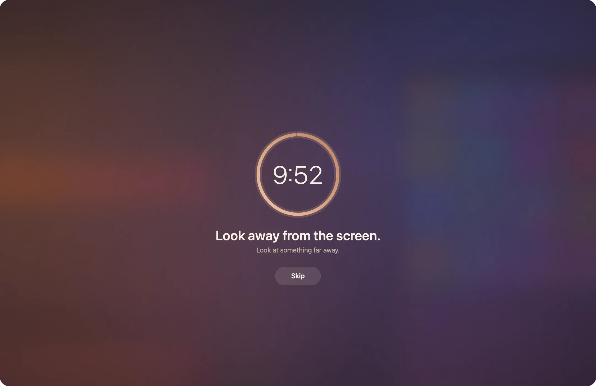

Macを見守る精霊。
WarashiはMacを見守り、バッテリーを若々しく、ディスクをすっきりと保ち、異常があればすぐにお知らせし、休憩をうながします。11本のアプリの代わりに、静かなメニューバーアプリがひとつ。
Apple silicon · macOS 26以降 · 無料ベータ版 · アカウント不要


整える · バッテリー
80%で維持。
100%のままのバッテリーより、何年もゆっくり劣化します。
片づける · クリーンアップ
7.2 GB を安全に削除できます
アプリのキャッシュブラウザログデベロッパ
休む · 休憩
0:15
画面から目を離しましょう。
チェックアップ
問題ありません。
知る · アラート
 Google Chrome9.8 GB
Google Chrome9.8 GB
メモリが足りなくなっています。終了するか、そのままにするか、お選びください。
知る · 履歴
14:02に遅かったのはなぜ？
Xcodeがプロセッサの大部分を使っていました。
デベロッパ向け
$ warashi agents Claude Code working · 62% left Codex done · my-app
知る
あなたのMacを、すみずみまで知っています。
メニューバーにはわらしと数値がひとつ、ノッチの横には2つ。測定は5秒ごとに行い、1年間保存します。何かが起きたときには、Warashiはもう理由を知っています。


お知らせは一度だけ
暴走するアプリ、足りなくなるメモリ、発熱、いっぱいになるディスク。
問題ごとに1回だけ、根拠と、やることをひとつお伝えします。
フライトログ · 昨日
- ミュージックが55分間Macをスリープさせませんでした
- Macの動作が6分間遅くなりました Xcodeがプロセッサの大部分を使っていました。
- Google Chromeのメモリが急速に増えています この1時間で1.35 GB増えました。
- 80%の上限を超えて、100%まで充電されました


整える
Macを、いつまでも若々しく。
80%に保ったバッテリーは、何年も長持ちします。毎週のチェックアップが、困りごとを早めに見つけます。そして新しいMacを選ぶときは、必要なものをWarashiが正確に知っています。


$249
保証期間外にAppleでMacBook Proの消耗したバッテリーを交換する費用。100%のまま熱を持ち続けるバッテリーが、最も早く劣化します。


アップグレードアドバイザー
次のMacに32 GBは必要？
30日間の実際の使い方をもとに、次のMacに必要なメモリとストレージの量、そして速いチップが役に立つかどうかをWarashiがお答えします。購入時の当て推量ではなく、根拠とともに。
片づける
ディスクを、すっきりと。
ディスクを埋めているものを確認し、自動的に作り直されるものを一度に片づけ、アプリは残りものごと削除できます。すべてゴミ箱に移るので、うっかり失うことはありません。
クリーンアップ
消せるものすべてを、注意の度合いごとに。
- 安全に削除できるものアプリやブラウザのキャッシュ、ログ、Xcodeのビルドデータ。自動的に作り直されます。7.2 GB
- 先に確認古いインストーラ、ダウンロードの重複コピー、メールの添付ファイルのコピー。1.4 GB
- 慎重にiPhoneやiPadのバックアップ。唯一のコピーかもしれません。38 GB


アンインストーラ
アプリを、きちんと削除。
各アプリがライブラリに残したものを一覧で表示し、数か月開いていないアプリを先頭に並べます。何年も前に削除したアプリの残りものも見つかります。
ファイルの中身は見ません
名前、サイズ、日付だけです。
Warashiが書類を開くことはありません。フルディスクアクセスは任意です。
ゴミ箱
空にしました。4.8 GB を解放しました。
ゴミ箱が大きくなったらお知らせし、空にしたときには実際の数字をお見せします。
休む
そして、あなたのことも見守ります。
目と背中をいたわるやさしい休憩、集中したいときの落ち着いた画面、そして作業に必要な間だけ起きていてくれるMac。


スリープさせない
1時間、作業が終わるまで、または蓋を閉じたままでも。
ダウンロード、ビルド、プレゼンテーションのときに。
ささやかな気づかい
- インターネットとディスクの速度
- Wi‑Fiの品質
- お掃除のための黒い画面
- デスクトップのアイコンを隠す
- マイクをミュートする
- すべて取り出す


デベロッパ向け
そのポートには何がある？ そのエージェントのコストは？
Claude Code、Codex、Cursor：それぞれの作業状況、上限の残り、呼ばれたときのノッチでのお知らせ。プロジェクトごとの開発サーバ、Docker、メモリ上のローカルAIモデル、そしてツールが残していく数GBのデータ。


warashiコマンド
$ warashi explain 14:30 Memory ran short Swap rose from 1.2 GB to 8.6 GB. $ warashi apps --hours 3 Xcode CPU 37m 35s 9.4 GB Safari CPU 26m 22s 6.1 GB
さらに、読み取り専用のMCP接続(任意)で、ClaudeやCursorなどのAIアプリがMacの履歴をもとに答えられます。追加しない限り、何も共有されません。
引き出しいっぱいのアプリの代わりに、静かなアプリをひとつ。
Warashi にできることをすべて揃えるには、11本のアプリが必要です。これがその引き出しで、価格は各開発元のサイトのものです。どれも悪いアプリではありません。それぞれの得意分野では優秀です。
- メニューバーのリアルタイム表示と履歴iStat Menus 7$11.99買い切り
- クリーンアップ、アンインストーラ、残りファイル、マルウェアスキャンCleanMyMac$39.95年額
- ディスクを占めているもののマップDaisyDisk$9.99買い切り
- 重複ファイルGemini 2$19.99年額
- 充電上限、フル充電、スケジュールAlDente Pro€11.49年額
- 数か月にわたるバッテリーの状態coconutBattery Plus€9.95買い切り
- 休憩と姿勢のリマインダーLookAway$19買い切り
- ソフトフォーカス：作業中のウインドウ以外を暗くHazeOver$4.99買い切り
- 蓋を閉じてもスリープさせないAmphetamine無料
- Claude Code、Codex、Cursor の上限CodexBar無料
- Xcode とシミュレータのクリーンアップDevCleaner for Xcode無料
- 過去1年のどの瞬間も理由つきで、アプリごとの電力コストもこれを売っているアプリはありません–
≈ $130初年度、以後毎年 ≈ $73
11本を合わせた Mac 1台分の費用です。うち3本はサブスクリプションで、それぞれに設定、アップデート、メニューバーのアイコンがあります。
$0Warashiのベータ版期間中
上のすべてが、ひとつのアプリに。Warashi 1.0 は買い切りです。サブスクリプションは一切ありません。履歴と設定はそのまま引き継がれます。
価格は2026年11月時点の各開発元サイトまたは Mac App Store のもので、Mac 1台分です。ユーロ価格は約 $1.15 で換算しています。地域やセールによって異なります。各アプリはその分野で私たちが選ぶものです。その分野では Warashi 以上のことができるものもあり、Warashi がそれらのすべてをこなすわけではありません。
0.2%
(バックグラウンドでの1コアあたり)。画面がスリープしている間は、まったく使いません。
60MB
のメモリ(ウインドウを閉じた状態での目安)。Swiftネイティブで、Apple silicon向けに作られています。
0件のアカウント
ダウンロードして、開くだけ。履歴がMacの外に出ることはありません。
設計からプライベート
- アカウントもクラウドもなし。アプリやファイルについてのテレメトリもありません。
- 画面収録も、キー入力も、ファイルの中身も、決して取りません。
- 送るのは匿名の利用統計のみ。ようこそツアーでもお知らせしています。送信内容の詳細
2分でわかるWarashi。
よくある質問。
わらしとは？
日本の民間伝承に伝わる座敷わらしは、家に住む小さな精霊。住みついた家は栄えると言われています。私たちのわらしは、あなたのメニューバーに住んで、Macを見守ります。
どのMacで動きますか？
macOS 26以降を実行しているApple silicon（M1以降）のMac。
無料ですか？
ベータ版の間は無料です。Warashi 1.0は買い切りで、サブスクリプションはありません。履歴と設定は引き継がれます。
AlDenteやCleanMyMacはそのまま使えますか？
使えますが、充電管理アプリが2つあると上限を取り合ってしまうので、どちらかひとつにしてください。ほかのアプリが動いているのを見つけたら、Warashiがお知らせします。
Macが遅くなりませんか？
いいえ。バックグラウンドで使うのは1コアの約0.2%とメモリ60 MBほどで、実測値を設定に表示しています。
アクティビティモニタとの違いは？
アクティビティモニタが見せてくれるのは、今この瞬間だけ。Warashiは、目を離していた間に起きたことを覚えていて、大切なときにはお知らせし、バッテリーとディスク、そしてあなたの面倒も見ます。

ひとりで、心を込めて作っています。
こんにちは、インディー開発者のAdamです。WarashiはアプリもデザインもこのWebサイトも、私自身のプロジェクトです。自分で使いたくなるようなMacアプリにしたい。静かで、数字に正直で、Macに負担をかけないアプリに。アイデアがあれば、あるいは何かおかしければ、ぜひご連絡ください。
Adam
静かなわらしが
Macを見守ります。
Warashiのベータ版の間は無料です。小さなダウンロードがひとつ、アカウントは不要。今夜から、あなたのMacを見守る存在がいます。